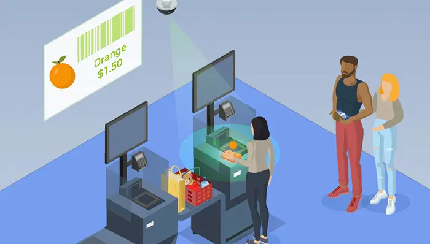

Object Detection and Recommendation for Retail
This is a real-time object detection application that uses a trained YOLOv8 model (best.pt) and activates your laptop's webcam to detect objects. The application is built with a simple graphical user interface (GUI) using tkinter.
